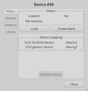

CDEmu
Dieser Artikel wurde für die folgenden Ubuntu-Versionen getestet:
Ubuntu 14.04 Trusty Tahr
Zum Verständnis dieses Artikels sind folgende Seiten hilfreich:
CDEmu  ist ein Programm, das es erlaubt, eine Vielzahl proprietärer Image-Formate auch unter Linux einzubinden. Es stellt Abbilddateien als virtuelles Laufwerk zur Verfügung und lässt sich mit der Windows-Software Daemon Tools
ist ein Programm, das es erlaubt, eine Vielzahl proprietärer Image-Formate auch unter Linux einzubinden. Es stellt Abbilddateien als virtuelles Laufwerk zur Verfügung und lässt sich mit der Windows-Software Daemon Tools  vergleichen.
vergleichen.
Momentan (Stand: Dezember 2012) werden die folgenden Formate unterstützt (Quelle ): BlindWrite 5/6 (B5T, B6T), WinOnCD (C2D), CloneCD (CCD, SUB, IMG), DiscJuggler (CDI), Easy CD Creator (CIF), Compressed ISO (CSO), CDRwin (CUE, BIN), PowerISO (DAA), Apple disk (DMG, CDR), gBurner (GBI), Track loader (ISO, UDF) für ISO9660 und UDF track Images, UltraISO's (ISZ), Alcohol 120% (MDS, MDX), Nero Burning ROM (NRG), ReadCD (TOC, BIN), Cdrdao's (TOC, BIN), XCDRoast (TOC, BIN) sowie Error Code Modeller (ECM), GZip (GZ) und Xz (XZ).
Die praktische Nutzung kann über die Kommandozeile oder grafisch erfolgen.
Installation¶
Das Programm ist nicht in den offiziellen Paketquellen enthalten. Man kann aber ein "Personal Package Archiv" (PPA) nutzen.
PPA¶
Zunächst muss man folgendes PPA als Paketquelle hinzufügen [1]:
Adresszeile zum Hinzufügen des PPAs:
ppa:cdemu/ppa
Hinweis!
Zusätzliche Fremdquellen können das System gefährden.
Ein PPA unterstützt nicht zwangsläufig alle Ubuntu-Versionen. Weitere Informationen sind der  PPA-Beschreibung des Eigentümers/Teams cdemu zu entnehmen.
PPA-Beschreibung des Eigentümers/Teams cdemu zu entnehmen.
Damit Pakete aus dem PPA genutzt werden können, müssen die Paketquellen neu eingelesen werden.
Nach dem Aktualisieren der Paketquellen installiert man die folgenden Pakete [2]:
cdemu-daemon (ppa)
cdemu-client (ppa)
 mit apturl
mit apturl
Paketliste zum Kopieren:
sudo apt-get install cdemu-daemon cdemu-client
sudo aptitude install cdemu-daemon cdemu-client
Benutzung¶
Nachdem man sich ab und neu angemeldet hat, sollte der CDEmu-Daemon gestartet sein. Man kann CDEmu jetzt über die Kommandozeile [3] benutzen. Wer möchte, kann sich auch eine grafische Oberfläche installieren, wie weiter unten beschrieben. Bitte beachten, dass die Nummerierung der Laufwerke wie bei Unix üblich mit 0 und nicht mit 1 beginnt.
cdemu load LAUFWERKSNUMMER PFAD_ZUR_ABBILD-DATEI
Beispiel:
cdemu load 0 /home/BENUTZERNAME/Image.mdf
Um die Emulation des im Beispiel genannten virtuellen Laufwerks wieder zu beenden, genügt:
cdemu unload 0
Images konvertieren¶
CDEmu kann auch dazu benutzt werden, proprietäre Image-Formate in das ISO-Format umzuwandeln. Dazu wird zunächst das Image normal unter CDEmu eingebunden. Jetzt kann man von dem virtuellen CD-Laufwerk wiederum ein Image machen, diesmal im ISO-Format, und zwar mit dem Befehl dd:
sudo dd if=/dev/sr1 of=Image.iso
Dabei muss das Gerät (/dev/sr1) eventuell angepasst werden, je nachdem, wie viele reale CD-Laufwerke man besitzt. In diesem Fall existiert ein reales Laufwerk (dev/sr0), die CDEmu-Laufwerke beginnen also bei /dev/sr1.
Grafische Oberflächen¶
Es existieren mehrere grafische Oberflächen für CDEmu.
gCDEmu (vormals GNOME-Panel Applet)¶
 Zuerst installiert man das folgende Paket:
gcdemu (ppa)
mit apturl
Paketliste zum Kopieren:
sudo apt-get install gcdemu
sudo aptitude install gcdemu
Gestartet werden kann das Programm bei Ubuntu-Varianten mit einem Anwendungsmenü über "System -> gCDEmu". Nachdem es gestartet wurde, erscheint Das Programm als Trayicon im Benachrichtigungsfeld des Panels. Jetzt kann man mit einem Linksklick  auf das Symbol ein Laufwerk auswählen und ein Image ein- bzw. aushängen.
auf das Symbol ein Laufwerk auswählen und ein Image ein- bzw. aushängen.
Einbindung in Nautilus¶
Um CDEmu in Nautilus einzubinden, lädt man sich folgendes Skript  herunter und kopiert es in den versteckten Ordner ~/.gnome2/nautilus-scripts im Homeverzeichnis. Außerdem muss das Skript noch ausführbar gemacht werden. Nun kann man einen Rechtsklick
herunter und kopiert es in den versteckten Ordner ~/.gnome2/nautilus-scripts im Homeverzeichnis. Außerdem muss das Skript noch ausführbar gemacht werden. Nun kann man einen Rechtsklick  auf eine Image-Datei machen und diese mit "Skripte -> image-mount" einbinden.
auf eine Image-Datei machen und diese mit "Skripte -> image-mount" einbinden.
Einbindung in Dolphin¶
Für die KDE-Umgebung gibt es eine Oberfläche namens KDE CDEmu Manager . Sie bietet eine Einbindung in das Kontextmenü des Dateimanagers Dolphin und einen "Manager", mit dem man alle virtuellen Laufwerke verwalten kann. Leider gibt es noch keine fertigen Pakete dafür. Man muss sich den Quelltext herunterladen und nach der enthaltenen Anleitung installieren.
Hinweis!
Fremdsoftware kann das System gefährden.
 Programmübersicht
Programmübersicht- Erstellt mit Inyoka
-
 2004 – 2017 ubuntuusers.de • Einige Rechte vorbehalten
2004 – 2017 ubuntuusers.de • Einige Rechte vorbehalten
Lizenz • Kontakt • Datenschutz • Impressum • Serverstatus -
Serverhousing gespendet von